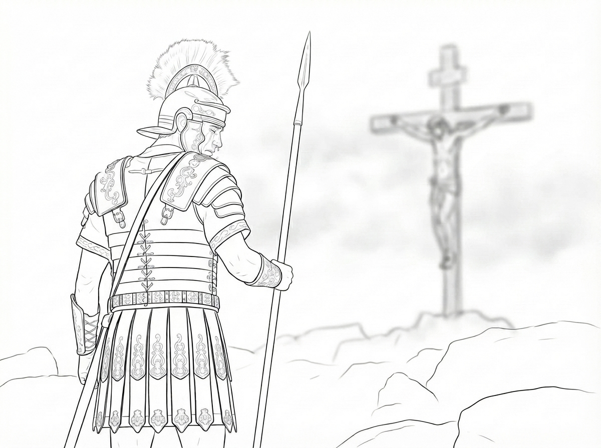
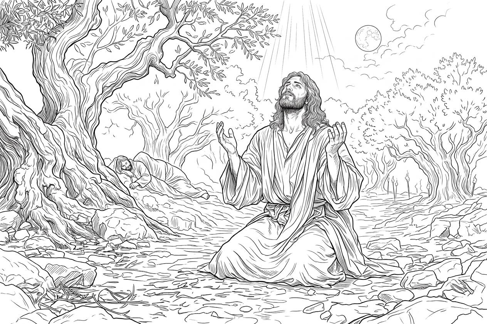
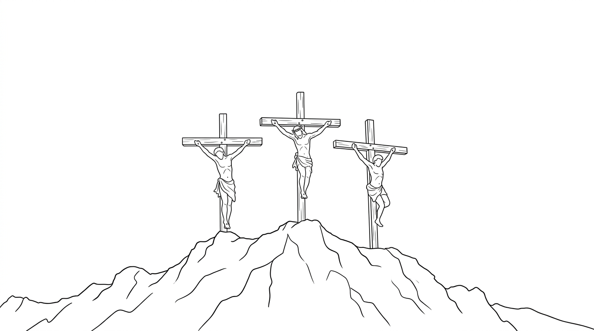

CHAPTER 07 OF 12
My Master Was Crucified

The night wind was quiet.
My companions and I stood upon the branches of the trees. We heard Jesus and His disciples enter the garden. Jesus walked ahead of them, then knelt beside a stone. Tears streamed down His face as He prayed:
“Father, if You are willing, take this cup from Me. Yet not My will, but Yours be done.”
My Master’s fingers gripped the stone tightly. His body was bowed low. His sweat and tears mingled together. The sound of His prayer carried clearly through the silent garden. The birds in the trees and all of us could hear Him. But His disciples were sleeping in the distance.
I had never seen my Master like this. He had once stood in the midst of wind and waves, and both had obeyed Him. He had healed the sick with a single word.
But that night, He knelt trembling upon the ground. His face was covered with tears. I did not understand. Why would a Master who could command the wind and the sea tremble upon a stone? I felt that something terrible was about to happen.

From the darkness in the distance came the noisy voices of men and a great glow of fire. Torch after torch appeared along the mountain path, slowly drawing closer. The owls and birds of the forest saw the shouting men and the flames and quickly flew away. I saw metal flashing in the firelight. They were carrying swords.
One of my Master’s disciples was named Judas. He was the one who came with them, leading a crowd carrying torches. When the other disciples realized that they had come to arrest Jesus—and perhaps them as well—they all ran away.
Judas kissed Jesus. I heard my Master ask him: “Judas, are you betraying the Son of Man with a kiss?”
Then they bound Jesus. Their torches formed a river of fire in the night as they led Him toward the town. There, the crowd pushed Jesus into a large courtyard, where they began to put Him on trial.
I actually liked the rules of human courts. Humans used courts to settle disputes. Their courts had reasons and order. They were not like us eagles, who sometimes settle our disputes by fighting until one of us is dead.
In a human court, people took turns speaking. Even a wicked man accused of a crime was given an opportunity to answer. During a trial, no one was supposed to beat the accused.
I had once tried to persuade my eagle companions that we should establish a court among ourselves. But none of us eagles knew what to do next. I thought perhaps we needed scholars who had spent many years studying, just as humans did.
But that night was different. The one standing trial was Jesus, their Teacher. He stood before a gathering of learned men, His face exhausted. A gust of wind came through the night. I spread my wings and let it carry me in a wide circle above the courtyard so I could hear what they were saying.
That night, one person after another spoke. Some made accusations. Some shouted. Some had already nodded to one another before Jesus had even answered. I could not understand why they were in such a hurry to condemn a man. Should they not listen first? These learned men questioned Him while mocking Him at the same time.
Jesus said very little.
The charge against Him was that He claimed to be the Son of God, the Christ.
He answered almost nothing. Only when they asked Him whether He was the Son of God did He speak.
My Lord, why are You silent?
You are like a lamb led to the slaughter, silent before those who would kill You. I have seen ravens fighting over the blood of sheep at the slaughterhouse.
You who judge Him, do you not see? How did He teach the people? Did they not love Him? How many among you have listened to His teaching? His words were like a lamp for the path, shining within your hearts. How can you welcome Him in the daylight and condemn Him at night? If what He says is false, this will pass away on its own. You do not need to do anything to Him. But if what He says is true, why do you reject Him?
After a night filled with accusations, those learned men sentenced Jesus to death. At the moment the sentence was pronounced, the wind stopped. I almost fell from the sky.
I cried.

For the first time, I learned that human beings did not always need swords to fight. They could also kill a man with lies, power, and a judgment. A war without swords could tear at my heart just as deeply.
Those learned men did not have the authority to carry out a death sentence, so they had to hand Jesus over to the Roman governor and his soldiers. They all agreed that He should be taken to their governor as quickly as possible.
At daybreak, they bound Jesus and brought Him to their governor, Pilate.
As I circled above the city, I suddenly saw Judas, the one who had betrayed his Teacher. He stood alone beneath a tree, his head bowed, his heart filled with grief and regret. He went to the learned men who had accused Jesus. He wanted to return the bag of money they had given him, but they would not take it.
I did not understand. He had followed my Master. He had walked with Him from place to place. Why, in the end, had he betrayed Him? Judas threw the money into the temple. The coins scattered across the floor. Then he went outside the city and hanged himself beneath a tree.
The next morning, as the first light of dawn had barely risen above the city walls, the streets were already growing noisy. I circled high above the city and saw crowds gathering in the square before the governor’s headquarters. Some hurried in from the city. Some stood along the roads, watching. Others walked while loudly discussing everything that had happened the night before. More and more people arrived.

From above, I saw that the square was already filled with people. When we eagles want to watch a fight, only a few of us need to gather. But humans are different. They like to gather together until their voices become louder than any one voice could ever be. I heard people shouting. I saw them pointing toward the center of the square. Roman soldiers stood all around them, weapons in their hands.
Then I saw my Master.
The soldiers brought Him out. I knew they must have beaten Him. There were bloodstains and marks across His body.
Beside Him stood another man who had also been brought out under guard. I had heard his name before.
Barabbas.
He was a robber, a man who had committed crimes. I looked at him.
Then I looked at my Master. The crowd grew louder and more agitated.
I saw a great black cloud above Barabbas’s head. It was heavier than any dark cloud I had ever seen before.
Then I looked at the Lord Jesus. He said nothing. His countenance seemed to shine above the square.
My Lord, why are You silent?
The governor told the crowd that he had the authority to release one prisoner. He asked them whether they wanted him to release this robber, or Jesus—the One who had taught them and whom they had once loved.
The crowd shouted:
“Barabbas!”
The wicked man Barabbas walked proudly into the crowd and disappeared. The black cloud followed him.
Pilate asked what should be done with Jesus. The crowd shouted:
“Crucify Him!”
“Crucify Him!”
Their cries echoed throughout the city and frightened every bird that had been resting in its nest. We all flew away.
We old eagles had often flown over the hill outside the city where men were crucified. We had seen how the Roman soldiers carried out their executions. Before a crucifixion, the soldiers stripped the condemned man of all his clothing, even his undergarments. The bodies hanging naked upon the crosses made it easier for ravens and vultures to tear at their flesh. The smell of blood was always there. Ravens and vultures were always circling overhead. But I had never imagined that one day my own Master would hang there. Then I understood something. The men hanging upon those pieces of wood had once been loved by someone. And today, the One who would hang there was my Master.
The Roman soldiers forced my Master to carry His cross. It was taller than He was, and He could no longer carry it.
They came to the top of the hill. The soldiers mocked my Master. They twisted together a crown of thorns and placed it upon His head.
The thorns pierced His skin. Blood ran down His face and blurred His vision. The soldiers stretched out my Master’s hands and drove nails through them into the wood. Then they raised the cross.
Two other criminals were crucified beside Him. One of them was so heavy that, when his body hung from the cross, the bones in his hands tore under the weight.
The pain was so terrible that he endured it while continually cursing God.
But the other criminal rebuked him.
“Do you not fear God? We are receiving what we deserve. But this man has done nothing wrong.”
Then, with the little strength remaining in him, he spoke to my Master from the cross, his voice weak and sorrowful:
“Jesus, remember me when You come into Your kingdom.”
I heard my Master answer him:
“Truly I tell you, today you will be with Me in paradise.”
I lifted my eyes toward the heavens. I saw countless hosts of angels. Their faces were solemn as they watched what was happening below. Without my Master’s command, they waited. At His single word, they could descend from heaven in an instant.
My Lord, why are You silent?
You could command the armies of angels—and we warriors of the sky—to rescue You from these hateful humans.
My Lord, why do You not command us? If You commanded me, I would fly down this very moment. I could seize those soldiers with my talons. I could drive them all away with my wings. All of us eagles could descend together. We could fill the entire hilltop with wings. The armies of angels could easily lift You down from the cross and restore You to Your glorious and majestic throne.
My Lord, why do You allow these humans to shame You?
My companions and I circled above the hill, crying out. Whenever ravens or vultures came near Your cross, we drove them away with our cries. We would not allow them to touch You.
In the afternoon, darkness suddenly fell.
The whole earth grew dark. I heard my Master say:
“My God, My God, why have You forsaken Me?”
I looked at Him. He said nothing more. His head bowed. Then He breathed His last. My Master was dead.
Suddenly, the earth shook violently. In the distance, great stones broke loose from the cliffs and crashed down. Birds burst into the air. Deer fled into the forest. Every creature beneath the earth hid in fear.
The soldiers cried out in terror:
“Surely He was the Son of God!”
The Roman officer named Centurion beat his chest and wept bitterly.
“I have killed my Teacher and the Son of God,” he cried.
“Why did I not have the courage to refuse the command of my commander?”
“I should have risked my life for a good man. Why did I not?”
I had seen Centurion before. When my Master taught, he had listened with excitement and seriousness. There had been fire in his heart. There had been light above his head. But now his face was covered with tears. He stood beneath the cross and wept.
Centurion, it is too late to weep now.
My Master is dead. I grieved with you.
The owl’s brow was deeply furrowed.
The eagles’ beaks were tightly closed.
Our Lord hung beneath the crown of thorns, the cruel crown covering His suffering brow.
This was a knot we could not understand.
A knot that would become part of history.
Our hearts could not be still.

🌟 Finished this chapter?
Fly over and answer five questions about "My Master Was Crucified" to earn stars!
Fly to get stars